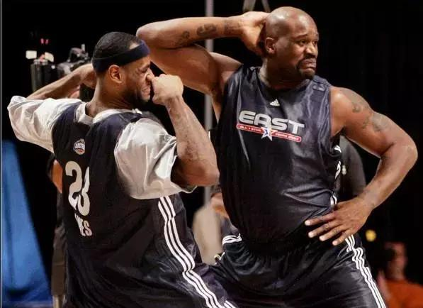
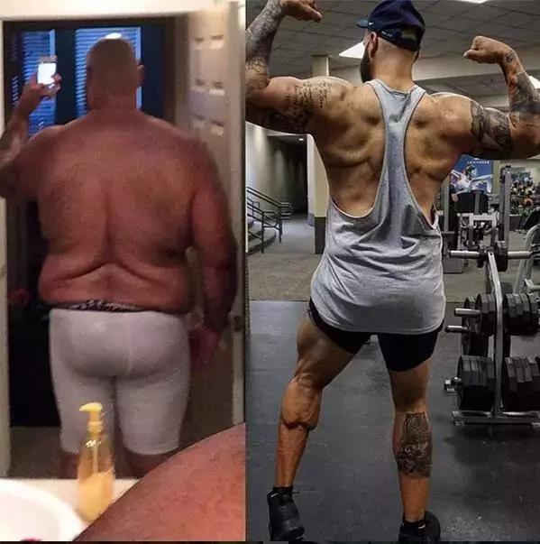

都说每个胖子都是潜力股 一旦瘦下来就亮瞎你的脸 这话你可别不信

但是减肥的期间你必须 通过健康的减肥方式 若是减肥方法不正确 “暴瘦”的结果就会和男主角一样！
32岁的Pasquale Brocco来自美国亚利桑那州 是一个公认的超级无敌大胖子 3年前，他的体重达到了605磅（约274公斤）！
你要是问我，体重274公斤什么概念？ 驰骋NBA赛场的奥尼尔 身高2米16体重也才147公斤！！

几乎每个大胖子都是因为 肥胖影响到了健康才会想去减肥 Pasquale Brocco也不例外 医生跟他说 他的高血压和高胆固醇，已经非常严重 在不减少体重，对身体的危害十分之大
但500多斤的体重，减起来也不是那么容易的 首先健身房是不用想了， 一开始强度太大不适合他,于是他决定从压马路开始 他的计划是：每次一到饭点， 他就徒步走1英里（约1.6公里）的路程 去最近的沃尔玛买食物。 为了吃东西，我每天要去3趟沃尔玛 那么一天就能走6英里（9.6公里）。 ”Pat 说，“这已经很惊人了， 因为我从来没走过这么远的路。

就这么周而复始地走了两年时间 居然掉了200磅（90公斤）的肉！ 从这时候开始， Pat 终于可以顺利去健身房锻炼啦。 接下来，他在运动和饮食上都做出了改变： 运动方面， 他不仅把去沃尔玛的路程搬到了跑步机上 还加练了举重
饮食方面， 他丢掉了那些易胖的垃圾食品， 增加了蔬菜、甜土豆、藜麦、燕麦这些健康食物。 “当我意识到奶制品也是阻碍减肥的东西， 我立即就把它们清除出食谱了。”
最后，他也成功实现自己的梦想 顺利在健美比赛上获得了金牌 而且大屏幕还放上了他的对比照 向他致敬